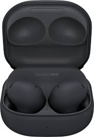

Apple AirPods Pro 2 vs Samsung Galaxy Buds 2 Pro vs Sony WF-1000XM5: Which One Wins?



A True Battle in the Premium Audio Realm
In today's fast-evolving world of wireless audio technology, users are no longer satisfied with devices that simply sound good. True Wireless Stereo (TWS) flagmans now deliver studio-grade sound stages, unparalleled Active Noise Cancellation (ANC) systems, and next-level ergonomic comfort. In this detailed review, we thoroughly compare three giants of the current audio market: Apple AirPods Pro 2, Samsung Galaxy Buds 2 Pro, and Sony WF-1000XM5.
All three brands have crafted the ultimate expressions of their respective ecosystems. But which one secures the highest ranking on universal platforms? We answer all your questions by diving deep into the acoustic architecture, driver configurations, and software capabilities of each product. Having tested these models extensively, we are ready to lay out their pros and cons in a straightforward, easy-to-understand format.
With endless choices on the market, finding the gear most deserving of your money is no easy task. Some are drawn to sleek designs, while others prioritize battery life. Through this article, you will learn exactly which flagship best aligns with your daily routine and your smartphone. No unnecessary complications—just the deepest, most essential analysis.
1. Acoustic Architecture and Sound Quality Analysis
Sound balance and frequency response serve as the heart of any audio equipment. Therefore, we kick off our analysis with the unique drivers and sound signatures of each model. How natural and pristine the audio output feels heavily depends on your preferred music genres.
Apple AirPods Pro 2 — The Enhanced H2 Processor Effect
Apple has equipped the AirPods Pro 2 with a custom low-distortion audio driver and the upgraded H2 chip. This processor executes computational audio algorithms in real time. Regardless of the volume level, the low frequencies (bass) remain deep and clean, while the high frequencies (treble) are tuned smoothly to prevent ear fatigue. Apple's greatest triumph is its Spatial Audio system featuring dynamic head tracking. When this mode is active, it genuinely feels like you are standing in the middle of a live concert hall. Especially when watching movies, the sound seamlessly wraps around you from all directions.
However, it is worth noting that the AirPods Pro 2 aims for a more universal sound signature. This means it lacks the overwhelming, earth-shattering bass profiles preferred by some. Everything is balanced and clear. It is beautifully suited for classical music, podcasts, and vocal-heavy tracks. If you listen to a wide variety of audio content throughout the day, you will surely appreciate its neutral sound balance.
Samsung Galaxy Buds 2 Pro — The Leader of the 24-bit Hi-Fi World
Samsung engineered this model in partnership with AKG audio engineers, implementing a 2-way coaxial speaker system (incorporating a dedicated tweeter and woofer). This allows the high treble and deep low bass to operate beautifully on separate fronts. Leveraging the Samsung Seamless Codec (SSC), Galaxy smartphone users can enjoy uncompressed 24-bit Hi-Fi audio streams. The sound profile leans toward the famous Harman target curve—making it an ideal choice for those who love vibrant, dynamic music. Modern electronic tracks and hip-hop records sound remarkably punchy.
However, this amazing 24-bit fidelity is exclusive to Samsung phone owners. On other Android devices or iPhones, it defaults to the standard AAC codec, slightly scaling back the absolute sound depth. Nonetheless, its internal dual drivers do a phenomenal job separating instruments cleanly.
Sony WF-1000XM5 — Premium Dynamic Driver X and LDAC
Sony packed its flagship WF-1000XM5 with the new Dynamic Driver X, which is larger and more responsive than its predecessor. When it comes to pure sound quality, Sony compromises on nothing: it fully supports the high-resolution LDAC audio codec. If you possess high-quality, lossless audio files, Sony stands as the only model capable of resolving the finest, most intricate sonic details. The soundstage feels incredibly expansive, and instrument separation is precise. You can literally feel every individual instrument playing around you.
The companion Sony Headphones Connect app offers massive flexibility for tuning the equalizer to your heart's content. You can warp and shape the sound profile to match any genre. It is safe to say these earbuds were custom-built for true audiophiles who want to extract maximum enjoyment from their music.
Thanks to its pure acoustic precision, superior driver engineering, and LDAC codec support, the Sony WF-1000XM5 takes the crown for audiophiles. Samsung follows closely behind with its strong 24-bit performance for Galaxy users.
2. Active Noise Cancellation (ANC) and Transparency Mode
In modern urban environments, whether navigating loud subways or crowded offices, the perfection of an ANC system is paramount. Blocking out external noise correctly lets you stay focused or enjoy music at lower, safer volumes. Each flagship brings unique strengths to this department.
Sony WF-1000XM5: Operating with 3 microphones on each earbud and powered by twin proprietary processors (the V2 and QN2e), this model is a powerhouse. Thanks to its specialized polyurethane foam ear tips, it mechanically seals out a massive amount of high-frequency noise right away. It attenuates low-frequency rumbles (like airplane or car engines, or heavy street traffic) by up to 98%. In an office setting, it reduces nearby chatter to a faint murmur, keeping you completely in your zone.
Apple AirPods Pro 2: The Cupertino brand claimed to double the active noise cancellation power with this generation, and that claim holds up brilliantly in real life. Apple's system acts exceptionally fast to filter out sudden, loud ambient bursts (such as car horns or construction noise) dynamically. When it comes to Transparency Mode, however, the AirPods Pro 2 remains completely unmatched. It sounds so natural that you forget you are wearing earbuds at all, allowing seamless conversations. Its Adaptive Audio feature can even lower your music automatically the moment you start speaking.
Samsung Galaxy Buds 2 Pro: Delivers an above-average performance, isolating daily city noise quite effectively. Its wind-noise reduction design proves incredibly useful when spending time outdoors. Wind buffeting won't disrupt your phone calls or outdoor runs. However, when it comes to silencing sharp human voices or sudden, high-pitched noises, it falls just a step behind its rivals.
3. Comprehensive Technical Specifications Table
The following analytical breakdown lets you compare all the critical specifications side-by-side to find the features that matter most to you:
| Specification | Apple AirPods Pro 2 | Samsung Galaxy Buds 2 Pro | Sony WF-1000XM5 |
|---|---|---|---|
| Processor | Apple H2 chip | Custom Samsung SIP | Sony V2 + QN2e Processor |
| Audio Codecs | AAC, SBC | SSC (Seamless), AAC, SBC | LDAC, AAC, SBC, LC3 |
| Battery Life (With ANC) | 6 hours (Up to 30 hrs with case) | 5 hours (Up to 18 hrs with case) | 8 hours (Up to 24 hrs with case) |
| Protection Rating | IP54 (Dust and sweat resistant) | IPX7 (Fully water resistant) | IPX4 (Splash resistant) |
| Bluetooth Version | Bluetooth 5.3 | Bluetooth 5.3 | Bluetooth 5.3 (With Multipoint) |
| Charging Type | Type-C, MagSafe, Qi | Type-C, Qi Wireless | Type-C, Qi Wireless |
| Microphone Count | 2x per side + sensors | 3x high SNR per side | 3x per side (6 mics total) |
4. Design, Ergonomics, and Ecosystem Synergy
No matter how phenomenal a pair of earbuds sounds, it loses its core value if it doesn't fit correctly or causes ear fatigue during long sessions. Comfort and connection speed determine the overall user experience.
Apple AirPods Pro 2 sports the classic stem-based design. Its touch-capacitive controls make sliding up or down to adjust volume, or squeezing to skip tracks, an absolute breeze. The sensors are incredibly responsive and rarely misregister. If you live inside the Apple ecosystem—using an iPhone, Mac, and iPad—switching between devices happens instantly. Flipping open the charging case triggers a beautiful native pairing animation on your screen. However, Android users miss out on these smart features, reducing them to standard bluetooth earphones.
Samsung Galaxy Buds 2 Pro relies on a highly compact, stemless design that sits deeper within the ear canal. Thanks to its impressive IPX7 rating, it is the safest option for athletes and those active in rainy weather. Accidental drops into water won't ruin these buds. They lock firmly into the ears, meaning you won't have to worry about them slipping out during intense workouts. The exterior matte finish also does an excellent job resisting smudges and fingerprints.
Sony WF-1000XM5 arrived 25% smaller and 20% lighter than its predecessor. Because its outer shell features a glossy plastic finish, it can sometimes feel a bit slick when pulling the buds from their case. However, its specialized foam ear tips mold perfectly to your ear shape, achieving outstanding passive noise isolation. It also features true Bluetooth Multipoint, allowing it to connect to your phone and laptop simultaneously, seamlessly switching audio to whichever device plays sound.
5. Microphone Quality and Voice Call Tahlili
Wireless earbuds aren't just for music; they handle countless phone calls, online lectures, and virtual business meetings throughout the day. Consequently, clear voice transmission and smart ambient noise isolation are vital performance metrics.
Apple AirPods Pro 2 has maintained a commanding lead in microphone performance for years. Because the physical stems position the microphones closer to your mouth, they pick up speech naturally. The H2 chip’s background noise reduction algorithms ensure that even if you walk along a bustling city street, your voice reaches the listener cleanly. Voice volume remains consistent without sounding compressed.
Sony WF-1000XM5 utilizes bone conduction sensors alongside deep learning noise reduction algorithms. This system detects jaw vibrations to isolate your voice explicitly, cutting out harsh wind or traffic interference. In extremely chaotic environments, your voice may sound slightly synthesized or digitalized, but the recipient will still hear every single word clearly.
Samsung Galaxy Buds 2 Pro packs three high SNR (Signal-to-Noise Ratio) microphones capable of capturing even faint whispers. The aerodynamic contours help deflect incoming wind gusts. In quiet indoor environments, call quality is exceptional, though it may let slightly more surrounding ambient noise through during high-traffic outdoor scenarios compared to Apple and Sony.
6. Battery Autonomy and Charging Capabilities
When traveling long distances or power-using your earbuds through back-to-back meetings, battery longevity is crucial. Worrying about your next charge can ruin the experience. Let's compare the real-world battery metrics of these flagships.
Sony WF-1000XM5 is the absolute king in this category. Even with Active Noise Cancellation (ANC) turned on, it runs continuously for up to 8 hours on a single charge. The compact case extends this timeline by another 24 hours. Turning off ANC can boost the standalone earbud run time up to 12 hours. This is a spectacular result for long flights or all-day travel.正式
Apple AirPods Pro 2 maintains a perfectly reliable balance. With ANC enabled, the earbuds last roughly 6 hours. However, its charging case holds a substantial reserve, granting an extra 24 hours of listening time (30 hours total). Additionally, the AirPods Pro 2 case features a built-in speaker, letting you trigger an acoustic alert via the Find My app if you ever misplace it.
Samsung Galaxy Buds 2 Pro offers slightly lower battery numbers due to its ultra-compact form factor. It delivers around 5 hours of playback with ANC active, while the case yields an additional 18 hours. This is perfectly fine for everyday urban use, but frequent travelers may find themselves recharging the case more often. All three options support rapid charging and wireless Qi charging pads.
7. Ranking Hours Final Expert Conclusion
All three flagship wireless earbuds represent the pinnacle of 2026 audio technology. As we wrap up our comparison, it is clear that crown cannot go to a single absolute winner. The final choice rests entirely on the smartphone you carry and what you prioritize most in an audio companion:
- Apple AirPods Pro 2: If you are fully invested in the iOS ecosystem, appreciate unmatched microphone reliability, and want the most natural Transparency mode on Earth, this is your definitive choice. Within the Apple ecosystem, it functions flawlessly.
- Samsung Galaxy Buds 2 Pro: For Android and especially Samsung ecosystem users, this model serves as the most balanced, value-packed choice, boasting 24-bit Hi-Fi audio capabilities and a superior IPX7 water resistance rating.
- Sony WF-1000XM5: If you refuse to be tied down to a specific phone ecosystem, demand the highest fidelity through LDAC, want the longest battery life, and require the absolute strongest ANC, Sony rewards you with complete audio dominance.
Evaluate your budget and personal goals to select the model that fits you best. To check out our latest rankings, gadget reviews, and professional smartphone comparisons, feel free to visit our Ranking Hours Home Page. We remain dedicated to bringing you the most objective and accurate insights.